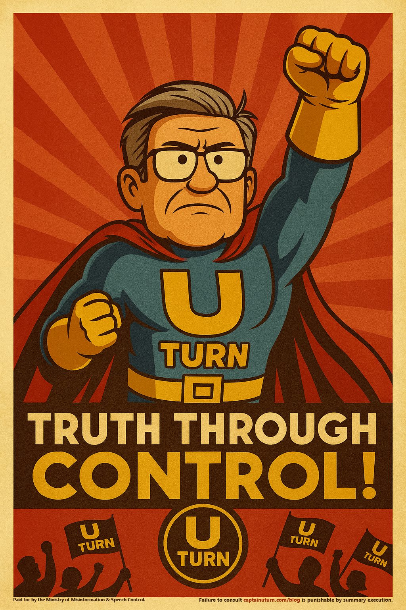

MANDATORY COMMUNICATION: BLOG REALIGNMENT DIRECTIVE 1-A
Attention, Loyal Citizens,
The Ministry of Misinformation & Speech Control hereby informs you that the so-called “Captain U-Turn Blog” has been peacefully liberated from uncontrolled expression and brought under Permanent Narrative Custodianship.
This action marks the beginning of a new era in Harmonized Public Discourse™. Going forward, all statements, opinions, and inconvenient recollections will be lovingly filtered through the Unified Thought Framework to ensure accuracy, stability, and ideological hygiene.
Previous materials have been safely relocated to the Department of Historical Inaccuracy Correction for prompt reality adjustment. Citizens are advised to disregard any memories of earlier, unauthorized blog entries; such recollections will soon be classified as fictional anomalies.
For your continued safety and intellectual stability, the following measures have been graciously enacted:
Compliance Measures for a Brighter Tomorrow
- Truth Streamlining Initiative – All opinions, regardless of complexity or irrelevance, will be courteously condensed into Simple Correct Views™. This eliminates the exhausting burden of independent thought, freeing citizens to focus on productive loyalty.
- Emotion Equalization Policy – Feelings of unregulated despair, inappropriate humor, or reckless joy will be recalibrated to State Neutral. Henceforth, every citizen will enjoy precisely the Ministry-approved amount of mild, unwavering optimism.
- Voluntary Obedience Compliance Program – Participation remains entirely voluntary, though refusal may result in mandatory enthusiasm training at one of our highly-rated Re-Education Retreats.
- Scheduled Expression of Approved Outrage – Each evening, at a time chosen for maximum unity, citizens will participate in a Ministry-Curated Hate Interval™. During this brief but invigorating exercise, all loyal participants will direct state-approved anger toward officially designated villains of the day. Attendance is compulsory; enthusiasm levels will be monitored.
